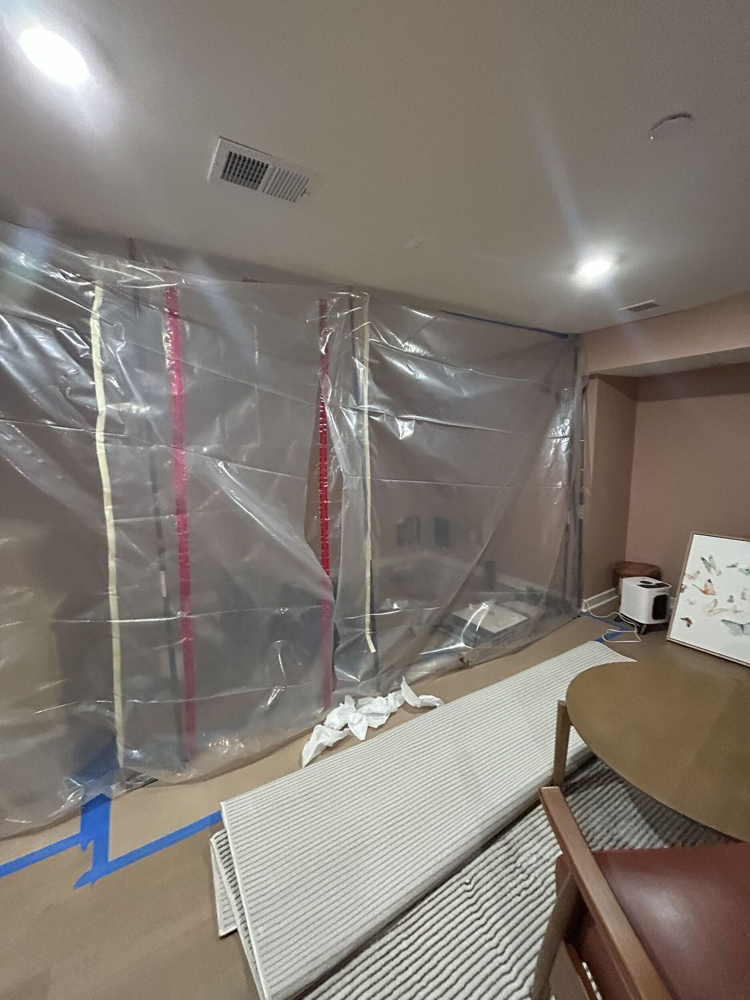
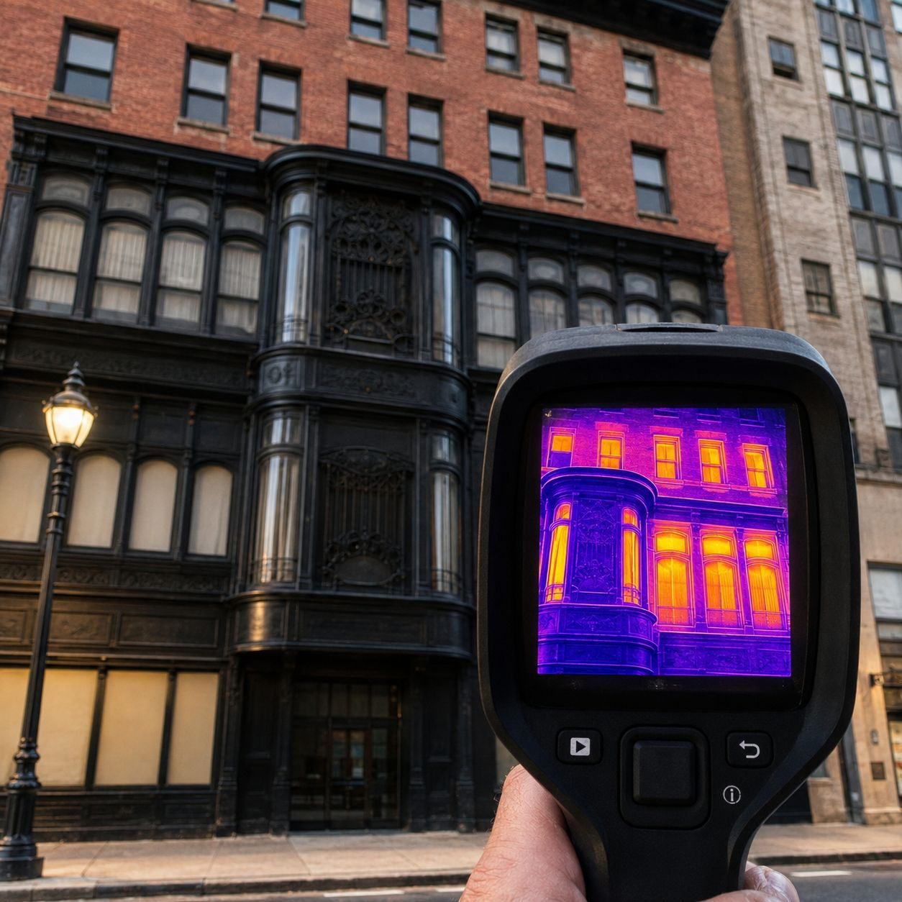

Mold remediation & leak detection · Greater Philadelphia Area
Tell us what you can see. We will tell you what it actually is.

Black spotting, a musty room, or growth that came back.
Mold Remediation

A stain that keeps returning, or a damp patch after rain.
Leak Detection
Not sure which? Call 484-428-0673 and describe it. No charge to talk.